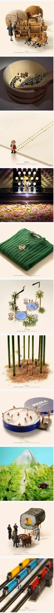
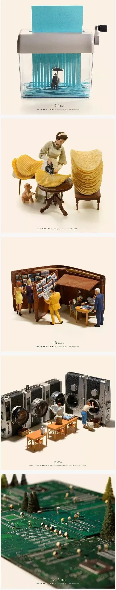
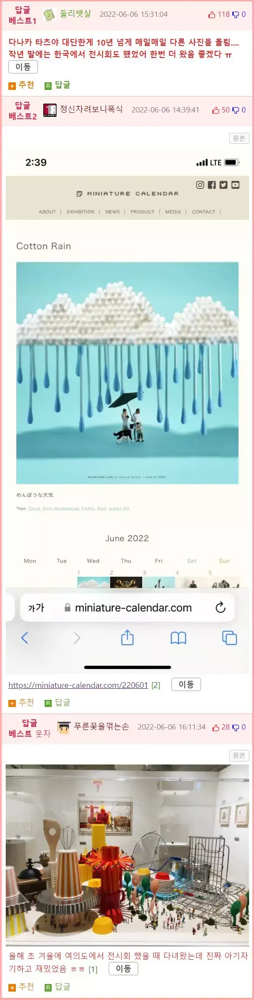

사진들 엄청 이쁩니다. 쩌...쩐다!
사진 매일 올라오는 곳:
https://miniature-calendar.com/220601
저런 포인트 잡는게 대단한거같습니다
인정 또 인정입니다. 사진 자체도 되게 이뻐요ㅋㅋㅋ
와...사진도 이쁘고 아이디어가 진짜 참신한거 같습니다
ㄹㅇ루 사진 자체만 봐도 색감이 푸근합니다.
캬 노트북 사진 이쁩니다 캬
저도 맘에 드는 사진임다
오 이런 건 직접 보러가면 정말 재밌을 것 같습니다만 이런 거 보려면 1년 동안 마음먹은 뒤 기운 내서 서울로 가야하는 관계로.. 망할 서울 놈들. 잘 봤습니다 덕택에
방구석에서 고화질로 보는게 승리자임다. 저 사진들 보면 괜히 기분 좋아지는 것 같아서 방게더에 가져왔습니다. 링크 들어가셔서 더 보시고 기분 좋아지십시오
오 쩐다 아이디어도 진짜 좋네요
진짜 아이디어가 쩌는 것 같습니다. 왜 전 이런 생각을 못 했을까 싶기도 하구요ㅋㅋ. 아싸감성에 맞는건지 모르겠지만 사진들이 그냥 되게 이뻐요ㅋㅋㅋㅋㅋ


후원댓글 10개
댓글 10개 ▼